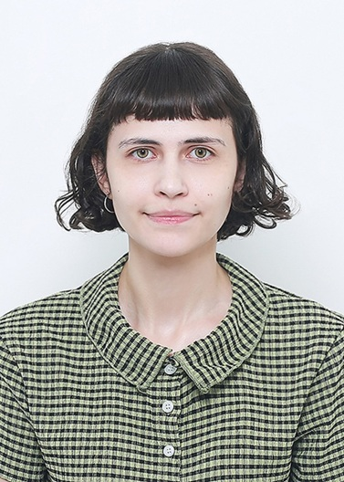

I am an M.S. student in Electronic Engineering at Jeonbuk National University, working on robotics perception, 3D scene understanding, and vision-language mapping. My research focuses on object-level semantic Gaussian mapping using SplaTAM, SAM2, and CLIP, with interests in semantic SLAM, 3D reconstruction, open-vocabulary scene understanding, and object-level robotic perception. Before graduate school, I worked in firmware and web development, which shaped my interest in building complete, reproducible systems.

Python, C/C++, JavaScript
RGB-D processing, point clouds, Gaussian Splatting, 2D–3D projection
SAM2, CLIP, vision-language models, semantic segmentation
PyTorch, Open3D, Git, Linux, Docker, Qt, Pandas
DBSCAN, KD-tree search, voxel downsampling, multi-view feature aggregation
Spanish (native) · English (fluent) · Korean (intermediate)
This thesis proposes a semantic Gaussian mapping framework that uses temporally consistent SAM2 masks to reconstruct object-level 3D point clouds on top of SplaTAM.
These reconstructed objects connect 2D mask propagation, multi-view CLIP semantic labeling, and the final Gaussian map. Instead of retraining or modifying the Gaussian representation, object identities and semantic labels are transferred to nearby Gaussian primitives through geometric association.
The result is an object-aware semantic Gaussian map that remains modular, interpretable, and suitable for robotics-oriented 3D scene understanding.
RGB-D frames, depth maps, camera poses, keyframes, and the reconstructed Gaussian map are obtained from SplaTAM.
SAM2 propagates object masks across frames while preserving consistent object identities over time. Masked depth pixels are back-projected into 3D and fused into object-level point clouds.
Multi-view CLIP assigns semantic labels to each reconstructed object using selected informative views.
Object IDs and semantic labels are associated with nearby Gaussian primitives without retraining the map.
SAM2 preserves object identities across RGB-D frames, enabling temporally consistent 2D masks for object-level reconstruction.
Temporally consistent masks are lifted into 3D using SplaTAM depth and camera poses, producing coherent object-level point clouds.
Multi-view CLIP aggregates selected object crops to assign open-vocabulary semantic labels to reconstructed objects.
Object IDs and semantic labels are transferred to nearby Gaussian primitives through geometric association — without retraining.
Developing object-level semantic Gaussian mapping pipeline for robot perception.
Frontend frameworks and REST APIs. Feature development and maintenance of web applications.
Embedded C for STM32, ESP32, PIC. UART, SPI, I2C, FreeRTOS. Built Qt/C++ debugging tools for hardware validation.
PCB design support, component selection, board debugging, and version control.
I'm currently open to research collaborations, internship opportunities, and PhD positions in robotics perception, semantic SLAM, and 3D scene understanding.
📍 Jeonju, South Korea · Graduating Aug 2026